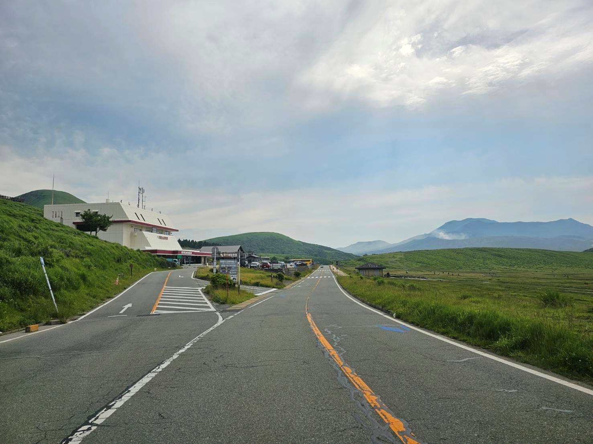
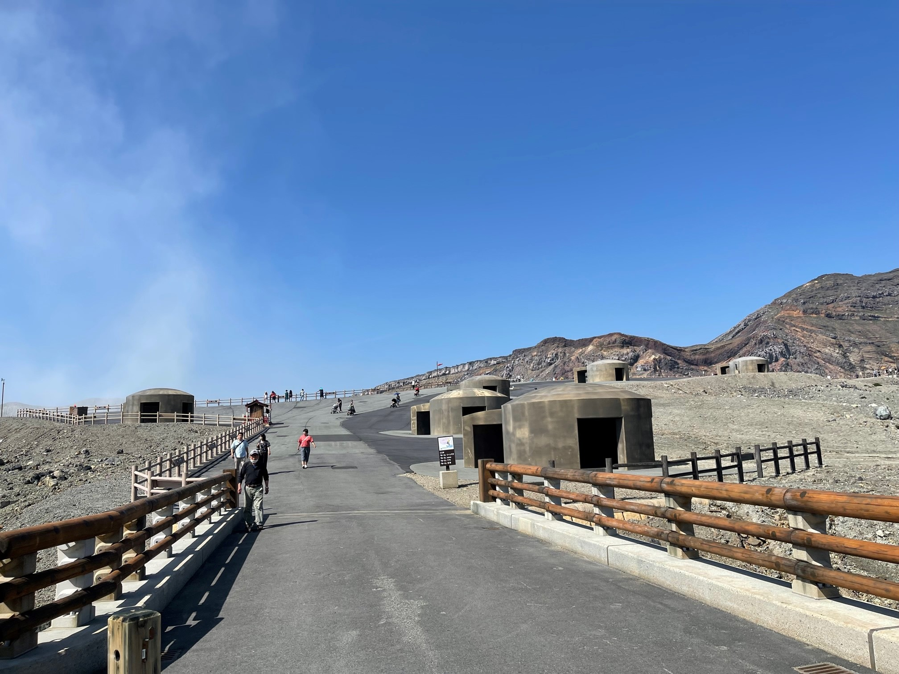
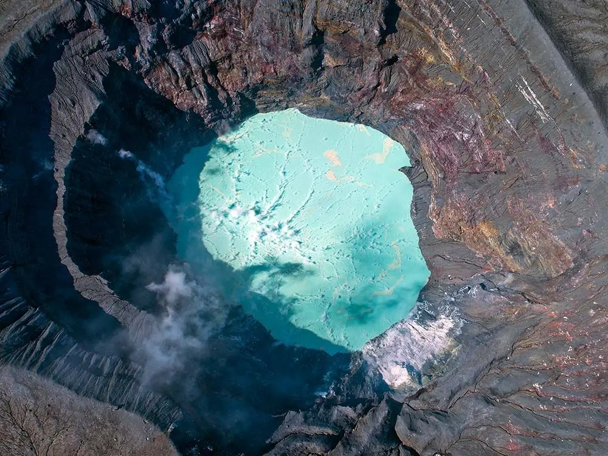

08:30–
09:00
09:00
Kamenoi Hotel Aso

阿蘇公園道路

阿蘇收費站

阿蘇火山口步道

火山避難休憩所
09:40–
10:40
10:40
阿蘇中岳火山口

📄 阿蘇中岳火山口參觀（PDF）

火山口步道

火山口步道遠景

阿蘇火山口標誌

中岳火山口

中岳火山口空拍
10:45–
11:45
11:45
草千里ヶ浜＆景觀咖啡
12:15–
13:00
13:00
南阿蘇景觀公路（展望點）
13:15–
14:00
14:00
上色見熊野座神社
14:00–
16:15
16:15
前往太宰府
16:15–
17:45
17:45
太宰府天滿宮
17:45–
18:30
18:30
移動至福岡市區
20:00 前
還車（Budget 天神北）